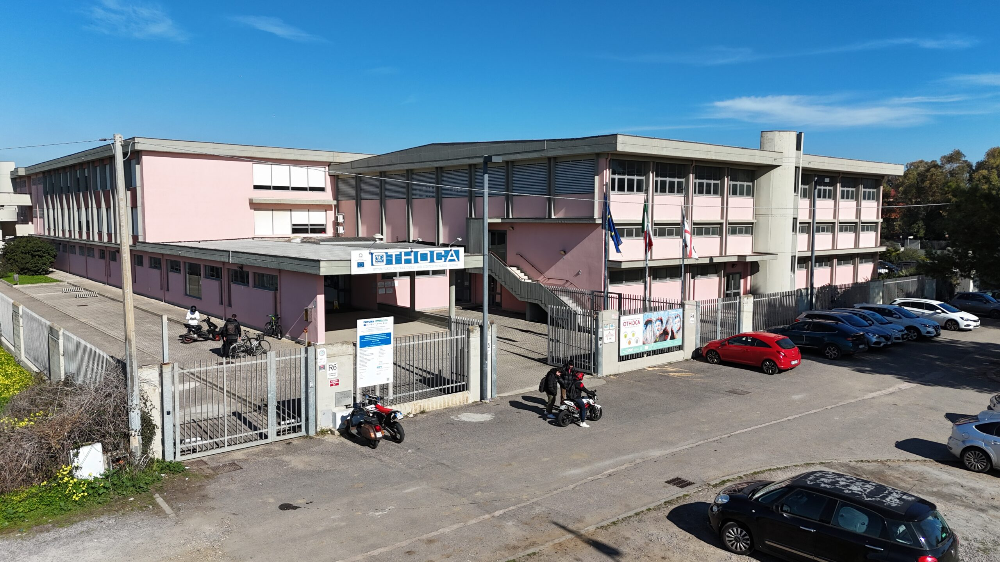

Oristano
Via Zara, zona industriale
09170 Oristano
Istituto Tecnico Industriale “Othoca”: informatica, elettronica, elettrotecnica, meccanica e liceo scientifico, a Oristano e Ales.
Il tuo primo giro nell’Othoca
Fatti un’idea dei percorsi, dai uno sguardo ai laboratori e scopri dove puoi trovarci.
La prossima tappa? Di persona.
Vuoi visitare la scuola o saperne di più? Contattaci e chiedi informazioni sulle visite e sui prossimi appuntamenti di orientamento.
Scegli chi sei e vai dritto a quello che ti serve.
Per chi sta scegliendo la scuola
Date e modalità di open day e orientamento possono cambiare: consulta gli aggiornamenti ufficiali e scopri come iscriverti.
La segreteria può aiutarti per informazioni su visite, indirizzi e iscrizioni.
Anno scolastico 2026/2027
Due proposte dedicate a chi vuole conseguire il diploma tecnico.
Foto: sito ufficiale dell’ITIS Othoca. Seleziona un percorso per leggere la scheda completa.
Alcuni spazi e laboratori della scuola, nelle immagini pubblicate dall’Istituto.



Se vivi o vedi una situazione che non va, puoi segnalarlo alla scuola.
Indicazioni e dettagli aggiornati sono disponibili anche nelle schede ufficiali delle sedi.
Via Zara, zona industriale
09170 Oristano
Sede di Ales
Consulta la scheda ufficiale per indirizzo e dettagli aggiornati.
Per informazioni su iscrizioni, sedi e orientamento.
Laboratori, musei e progetti che si fanno anche fuori dall’aula.